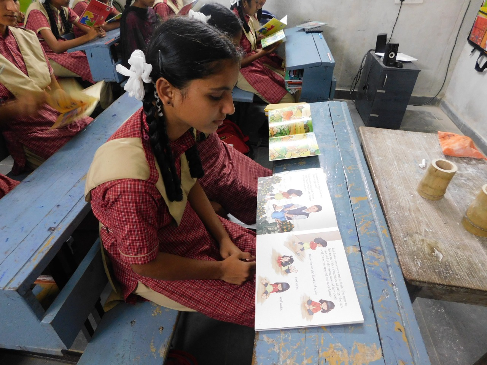
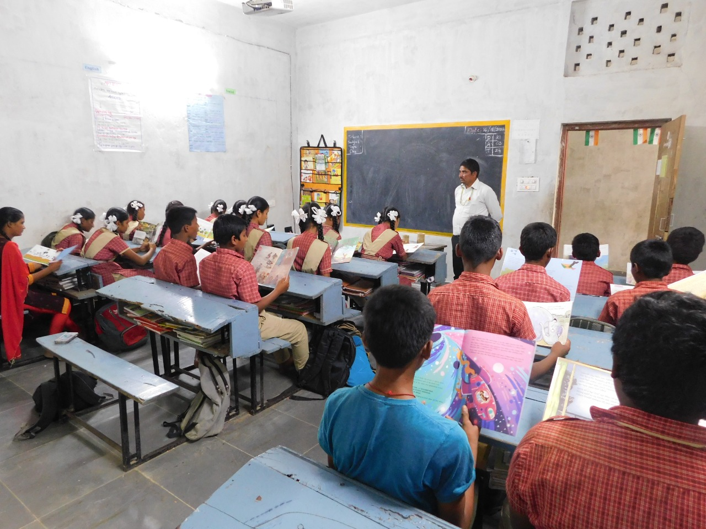
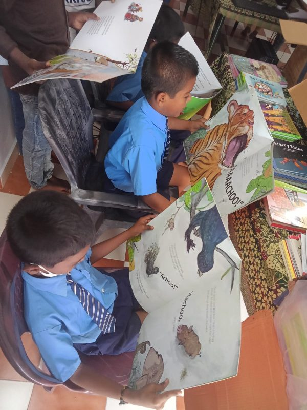
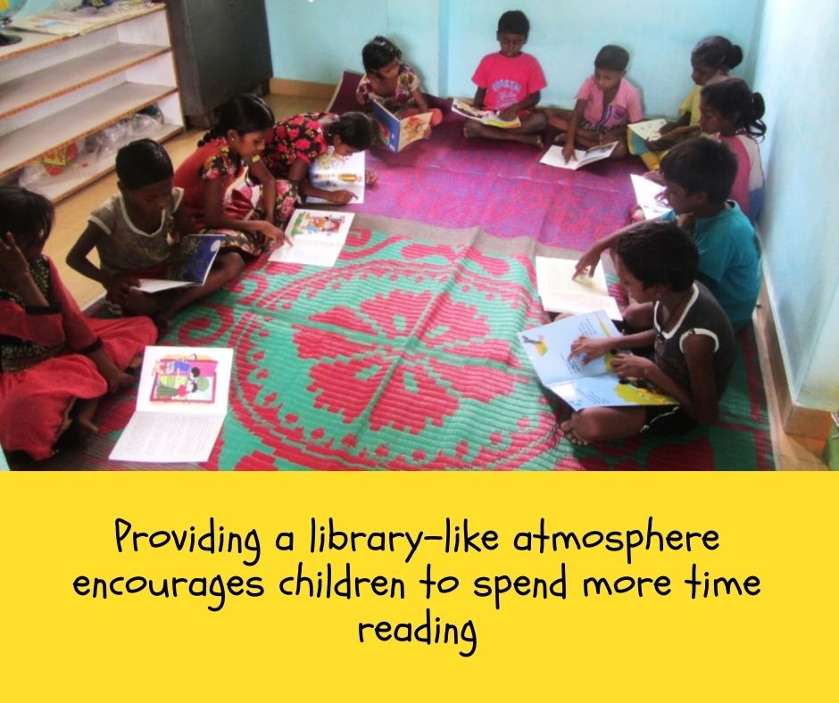
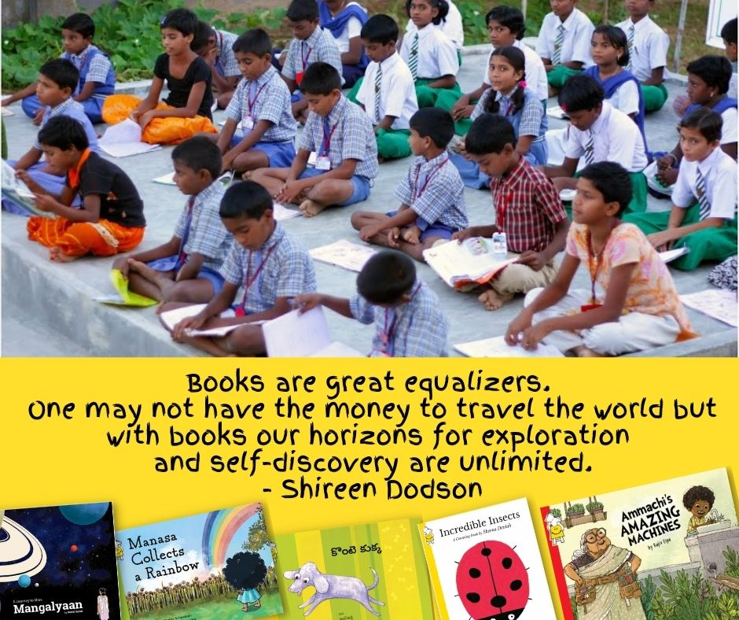
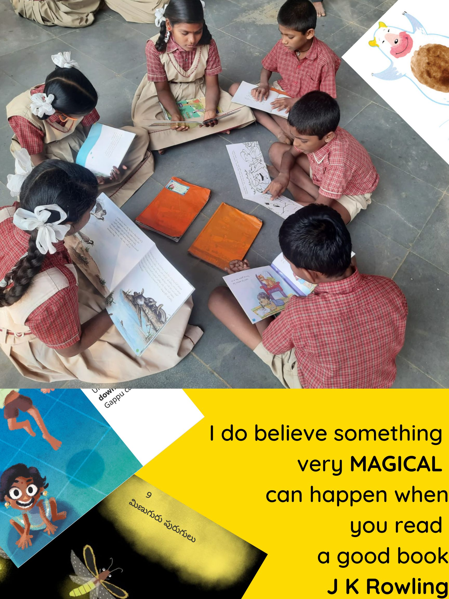

The Library Project
Three years of fundraising campaigns that put 3,700+ storybooks into rural libraries and schools.




Where it all began
My journey with this project started at home. As parents, we tried many ways to spark our daughter Leela's curiosity, but it wasn't until a visit to a beautiful library that everything changed. That visit transformed her relationship with books. She fell in love with stories, and I saw firsthand how powerful access to a library could be for a child. I knew then that I wanted other children, especially in rural communities, to have that same chance.
A birthday with a difference
When Leela turned four, we decided to celebrate differently. Instead of gifts and parties, we set out to raise funds for children's books. What began with ten Gram Panchayat libraries in Udupi, Karnataka, grew beyond my expectations as the community rallied behind the cause. The success of that first campaign gave me the confidence to continue.
Growing the mission
The following year, for Leela's fifth birthday, we expanded to Telangana. With the support of friends, family and well-wishers, we brought books to orphaned and underprivileged children in Warangal. By her sixth birthday, 1,400 storybooks had reached three schools supported by the Rural Development Foundation, directly benefiting over 1,500 students.
Each step was fueled by the belief that storybooks open doors to imagination, curiosity and new possibilities.
Weathering the challenges
The COVID-19 pandemic made fundraising harder, as donations to educational causes declined. I didn't want to give up. Through blogs, social media and a dedicated YouTube channel, I shared stories of impact and reached out to people who believed in the same vision. Their encouragement carried us forward, one campaign at a time.
Turning pages toward the future
This is only the beginning. My dream is to create vibrant community libraries in Telangana and beyond, spaces that bring together not just children but whole families around the joy of reading.
Three campaigns, every goal beaten

Ten Gram Panchayat libraries.
Goal 960 · delivered 1,010 · 105% of goal

Orphanage and digital school, via Sai Spandana.
Goal 1,080 · delivered 1,331 · 123% of goal

Three schools supported by the Rural Development Foundation, reaching 1,500+ students.
Goal 1,000 · delivered 1,392 · 139% of goal
What made it work: partnering with organisations already on the ground — Gram Panchayat libraries, Sai Spandana, the Rural Development Foundation — rather than building distribution myself. Each campaign grew its goal only as far as an existing partner could absorb the books, which is why all three delivered instead of over-promising.